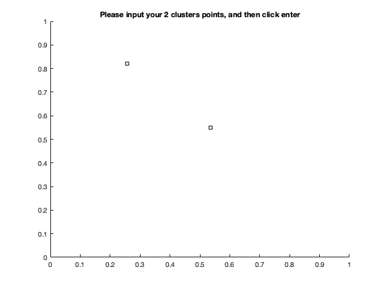
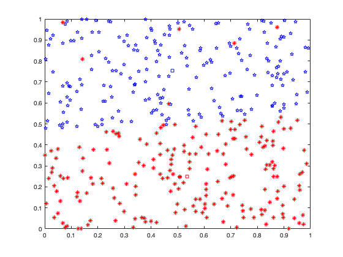

Contents
Illustration of the K-means algorithm using the re-scaled Old Faithful
% data set. (a) Green points denote the data set in a two-dimensional % Euclidean space. The initial choices for centres ?1 and ?2 are shown % by the red and blue crosses, respectively. (b) In the initial E step, % each data point is assigned either to the red cluster or to the blue % cluster, according to which cluster centre is nearer. % This is equivalent to classifying the points according to which side of % the perpendicular bisector of the two cluster centres, shown by the % magenta line, they lie on. (c) In the subsequent M step, each cluster % centre is re-computed to be the mean of the points assigned to the % corresponding cluster. (d)?(i) show successive E and M steps through to % final convergence of the algorithm.
initialization
import java.util.LinkedList; queue = LinkedList();
clear; clf; % initial samples points in 2-dimentional graph % create 200 random points for samples number_of_samples = 400; samples = rand(number_of_samples,2); a = 0; b = 4; % initial K cluster for classification and plot in addition to the samples number_of_clusters = 2; figure1 = axes(); figure1.Title.String = 'Please input your 2 clusters points, and then click enter'; axis([0 1 0 1]) [x, y] = getpts(figure1); clusters = [x,y]; clear temp; % clusters = 1.*rand(number_of_clusters,2) ; hold on plot(clusters(1:(number_of_clusters/2),1),... clusters(1:(number_of_clusters/2),2),'ks',... clusters(((number_of_clusters/2)+1): number_of_clusters,1), ... clusters(((number_of_clusters/2)+1): number_of_clusters,2),'ks'); % initial cluster belong variable R_nk. % If data poing X_n is assigned to to cluster k then % r_nk = 1, and r_nk = 0 for j!= k. This is known as 1-of-K coding scheme. r_nk = zeros(number_of_samples, number_of_clusters); % initial an Euclidient matrix by dim of (# samples)*(# clusters) % each floor is defined for storing minimum Euclidient distance calculation % of the samples and clusters eucl_calc = zeros(number_of_samples, number_of_clusters);
kmeans algorithm
bln = 0; % determin how many iteration is executed to finish the iteration = 0; clusters_new_temp = zeros(number_of_clusters,2); while (clusters_new_temp ~= clusters) iteration = iteration +1; if bln == 1 clusters = clusters_new_temp; end % calculate Euclidient distance for k = 1: number_of_clusters for n = 1: number_of_samples eucl_calc(n,k) = sum(((samples(n,:)) - (clusters(k,:))).^2); end end % find minimum distance for each data point X_n % define temporary matrix for seperate cluster data points % calculate r_nk r_nk(:,:) = 0 ; index = 0; temp_samples = zeros(number_of_samples,2); reverseindex = number_of_samples + 1; for n = 1: number_of_samples [m_val, m_idx] = min(eucl_calc(n,:)); r_nk(n,m_idx) = 1; % split data points for coloring in plot % this is an arbitrary work for better understanding if m_idx == 1 index = index + 1; temp_samples(index,:) = samples(n,:); else reverseindex = reverseindex - 1; temp_samples(reverseindex,:) = samples(n,:); end end pause(0.5); clf; plot(... temp_samples(1:(number_of_samples/2),1),... temp_samples(1:(number_of_samples/2),2),'bp',... temp_samples(((number_of_samples/2)+1):number_of_samples, 1),... temp_samples(((number_of_samples/2)+1):number_of_samples, 2),'r*'); hold on plot(clusters(1:(number_of_clusters/2),1),... clusters(1:(number_of_clusters/2),2),'bs',... clusters(((number_of_clusters/2)+1): number_of_clusters,1), ... clusters(((number_of_clusters/2)+1): number_of_clusters,2),'rs'); % update clusters weights clusters_new_temp = zeros(number_of_clusters,2); for cluster_update = 1: number_of_clusters clusters_new_temp(cluster_update,:) = ... (sum(samples .* r_nk(: ,cluster_update))) ./ ... sum(r_nk(: ,cluster_update)); bln = 1; end end disp('number of iteration'); disp(iteration);
number of iteration
20
